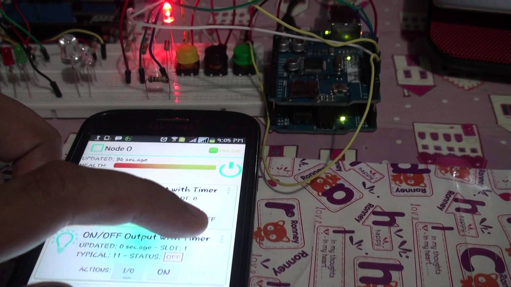
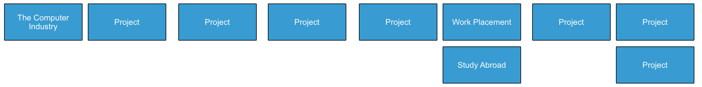
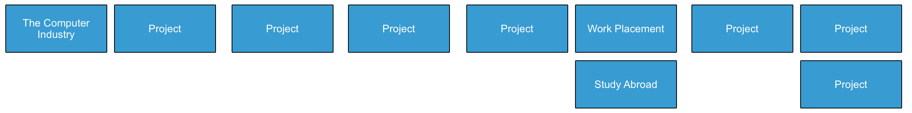

Data
 The programme will promote an ethos of collaboration, practical application, and innovation. A project module will be included at each stage of the programme (apart from semester 1) that, through individual and collaborative projects, will challenge students to combine the knowledge and skills acquired in the various strands. Each project module will also elaborate on a theme, orthogonal to the programme disciplines, but central to the student’s individual development.
The programme will promote an ethos of collaboration, practical application, and innovation. A project module will be included at each stage of the programme (apart from semester 1) that, through individual and collaborative projects, will challenge students to combine the knowledge and skills acquired in the various strands. Each project module will also elaborate on a theme, orthogonal to the programme disciplines, but central to the student’s individual development.
Project Learning Path
 The project will be assessed via a single report and presentation each semester. The report will demonstrate an artefact of the student’s choosing that integrates knowledge from two or more strands. This may be in the form of a software application, software/hardware combination, paper or combination of all of these. The ‘Orthogonal’ dimension must be addressed in the context of this report/presentation. The tuition team across each of the strands will stimulate project ideas and concepts for consideration by the students, who may take on board specific suggestions. Students as expected to proceed with ideas and concepts that particularly interest them individually, or collectively, in small teams.
 Department of Computing & Mathematics
Department of Computing & Mathematics
 
